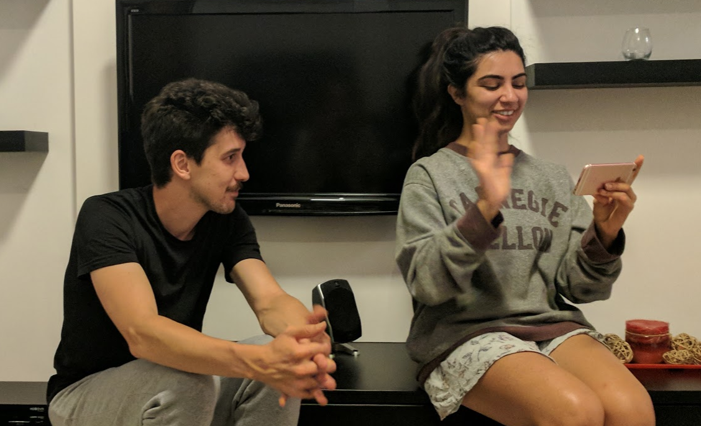

Educators and administrators have found that although Carnegie Mellon strongly prepares its
students with the subject matter expertise and technical
skills needed for entry-level jobs, these same students often struggle
to earn promotions for leadership positions that require a stronger
grasp of communication skills. While students are adept at developing
and executing their ideas, a lack of empowerment in communicating — both
in sharing and defending their choices and in mobilizing and inspiring
their colleagues — is a hurdle to advancement.

Our client
The central mission of the Simon Initiative is to link learning science and
educational practice in a symbiotic relationship, with each informing and supporting the other.
The project was named for Nobel laureate and Turing Award winner Herbert A. Simon, who declared that “Improvement in
post-secondary education will require converting teaching from a solo sport to a community-based
research activity.” The Simon Initiative advances his values, seeking to create a "learning engineering
ecosystem" built from data-driven insights. The Simon Initiative is affiliated with many of CMU's most prominent programs,
from IDeATe to Randy Pausch's
Alice.